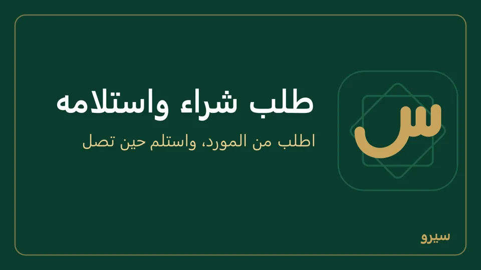
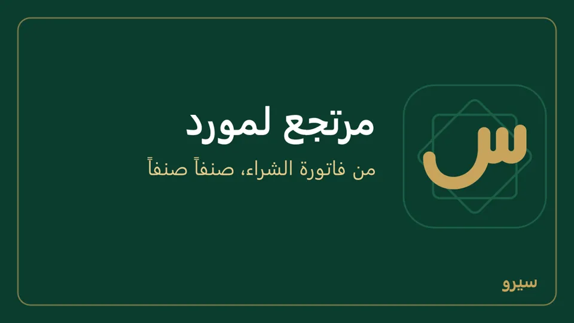
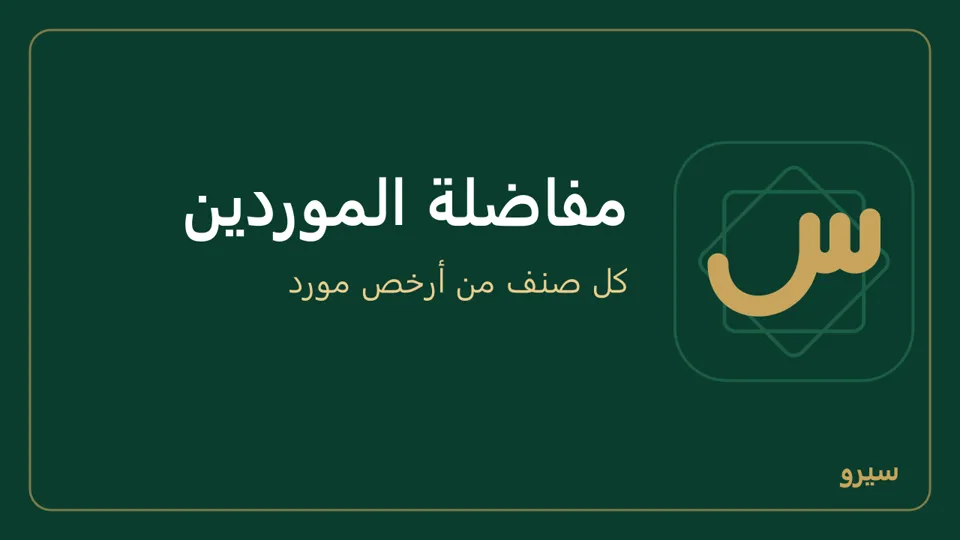

الشراء والموردون
فاتورة الشراء تُدخل البضاعة إلى المخزون وتحسب تكلفتها، وتسجّل ما عليك للمورد.
فاتورة شراء
- من المشتريات اختر فاتورة شراء جديدة.
- اكتب أول اسم المورد واختره من القائمة (مورد جديد: اكتب اسمه كاملاً فيُضاف مع حفظ الفاتورة)، ثم طريقة الدفع: على الحساب يصير المبلغ ديناً للمورد، ونقدي دفعته الآن من الصندوق، أو شام كاش وغيرها من طرق الدفع دفعته كله الآن بها. دفعت جزءاً أو أكثر؟ اكتبه في المدفوع الآن: الباقي يبقى ديناً للمورد، والزيادة تنزل مما له عليك (فواتيره المفتوحة الأقدم أولاً). فاتورة بالدولار: اكتبه بالدولار؛ مجموعها كما يظهر يدفعها كلها، والزيادة تسدّد فواتيره بالدولار بسعر صرف هذه الفاتورة. فاتورة تنتظر الموافقة تأخذ في المدفوع الآن حتى مبلغها فقط: سجّل الزيادة سند صرف بعد الموافقة. على الجوال تحت نقدي، بلا نقطة بين الآلاف: رقم لا يُقرأ مثل 1.500.000 يُرفض ولا يُحسب صفراً.
- في كل سطر اكتب الرمز أو اختر الصنف، ثم الكمية وسعر الشراء. Enter ينقلك إلى الخانة التالية ثم إلى سطر جديد. الترتيب نفسه كفاتورة البيع (كيف)، بلا التسعيرة: سعر الشراء هو سعر المورد. والقيد تحت الأسطر يريك ما سيُسجَّل في الحسابات قبل الحفظ.
- اضغط حفظ. تدخل البضاعة إلى المخزون، وتُحسب تكلفة كل صنف من أسعار الشراء وحدها.

تكلفة الصنف تُحسب من أسعار الشراء، فلا تُكتب يدوياً.
- معك إجمالي السطر من فاتورة المورد لا سعر القطعة؟ اكتبه في خانة الإجمالي فيُحسب سعر الشراء منه (الإجمالي ÷ الكمية). على الجوال اضغط على السطر واكتب إجمالي السطر.
- صنف له تاريخ انتهاء: اكتب تحت سطره رقم الدفعة وتاريخ انتهائها.
- يبدأ سعر السطر بآخر تكلفة للصنف، إلا لدور أخفى عنه المالك «التكلفة والربح» أو «أسعار الشراء» من الحقول الحساسة: يكتب السعر من فاتورة المورد، على الكمبيوتر والجوال.
- صنف غير موجود في القائمة؟ اختر + صنف جديد… في آخر قائمة الأصناف، واكتب اسمه وسعر بيعه إن شئت. يُضاف الصنف مع حفظ الفاتورة وتكلفته من سعر الشراء، وإن كان صنف بالاسم نفسه موجوداً تُسجَّل عليه. يحتاج صلاحية الأصناف.
على الجوال: شراء بضاعة من مجموعة الشراء والموردون، ثم مشاركة PDF أو طباعة (كيف). المورد الجديد يُضاف من الفاتورة نفسها: اكتب اسمه في بحث المورد واضغط إضافة، أو من الموردون ← جديد ← حفظ المورد. والصنف الجديد كذلك من أضف صنفاً، أو بمسح باركود غير معروف. الصنف نفسه يمكن أن يأخذ سطرين (دفعتان، أو سعران). بعد الكمية يأخذك Enter إلى السعر، وبعد السعر يفتح قائمة الأصناف للسطر التالي. تفاصيل أخرى أسفل الفاتورة فيها التاريخ والاستحقاق وملاحظة ومركز الربحية والمشروع.
غلط في فاتورة شراء؟ عدّلها كفاتورة البيع، أو ألغِها إن سُجّلت بالغلط.
طلب شراء واستلامه
طلب الشراء لا يغيّر المخزون ولا الحسابات: يُحسب قادماً حتى تصل البضاعة.
- يُنشأ من إعادة الطلب أو من مفاضلة الموردين أو من المشتريات ← طلب شراء.
- حين تصل البضاعة افتح الطلب واضغط تحويل إلى فاتورة شراء. تدخل البضاعة ويصير المبلغ على المورد. صنف له تاريخ انتهاء يطلب بجانب الزر رقم الدفعة وتاريخ انتهائها.
- طلب لن يصل؟ افتحه واضغط إلغاء.

على الجوال: طلبات الشراء من مجموعة البيع لطلب جديد أو لمشاركته مع المورد. وحين تصل: استلام البضاعة من مجموعة المخزون والإنتاج ← الطلب ← استلام البضاعة، أو إلغاء الطلب.
مرتجع لمورد
- افتح فاتورة الشراء (من المشتريات أو بالبحث برقمها).
- في قسم مرتجع اكتب الكمية الراجعة لكل صنف، أو إرجاع كل المتبقي، ثم تسجيل المرتجع.
- تخرج البضاعة من المخزون بتكلفتها، ويُخصم المبلغ مما عليك للمورد (أو يُردّ لك بالطريقة التي دفعت بها إن كانت الفاتورة مدفوعة)، وتُعكس ضريبة المشتريات.

- بعد إشعار مدين للمورد (خصم منه) يُخصم من المورد ما بقي من الفاتورة، وتخرج البضاعة بتكلفتها كما دخلت، وتعود حصة الإشعار من «تسويات أسعار المشتريات». وإشعار ينتظر الموافقة لا يدخل في سعر المرتجع: ما يُرجَع ينقص بقدره حتى يوافَق عليه أو يُرفض.
- المرتجع على دفعات يأخذ حصته من خصم الفاتورة وضريبتها مع ما سبقه، فلا يبقى على المورد ولا في المخزون قرش من فاتورة رجعت كلها.
- بضاعة مجانية من المورد (بونص بسعر صفر) تُرجَع وحدها فتخرج من المخزون.
- لا يُؤرَّخ المرتجع قبل يوم فاتورة الشراء.
على الجوال: مرتجع من مجموعة البيع والزبائن، واختر فاتورة الشراء.
مفاضلة الموردين
- سجّل أسعار كل مورد بعملته: من صفحة المورد في العملاء والموردون ← أسعار المورد.
- من المشتريات اضغط مفاضلة الموردين. اكتب الكميات (المقترحة من حد إعادة الطلب)، وأقل عدد بنود للمورد، وأقصى زيادة في السعر عند نقل بنود مورد مستبعد.
- اضغط قارن الأسعار. يوزّع البرنامج البنود على أرخص الموردين بعد تحويل الأسعار إلى الليرة.
- ما لا يمكن حلّه يُعرض عليك: اقبل المورد ببنود أقل، أو انقل بنوده رغم فرق السعر.
- إنشاء أوامر الشراء: طلب شراء لكل مورد بعملته، تستلمه من طلبات الشراء.

على الجوال: مفاضلة الموردين من مجموعة المخزون والإنتاج بالخطوات نفسها، والأسعار من مفاضلة الموردين ← أسعار الموردين، أو بملف من الموردون ← أسعار الموردين (Excel على الجوال).
الشراء بالدولار
- في فاتورة الشراء اختر العملة.
- اكتب سعر الصرف، أو اتركه فارغاً ليُستعمل آخر سعر مسجّل حتى يوم الفاتورة.
- يبقى ما عليك للمورد بالدولار، والقيود بالليرة بسعر يوم الفاتورة. فرق السعر عند الدفع يُقيَّد وحده.
- عملة غير الدولار؟ أضفها من العملات المستعملة.
على الجوال: في شراء بضاعة اختر العملة (USD مثلاً) واكتب سعر USD بعملة الدفاتر (SYP) إن كانت الخانة فارغة. الإجمالي يظهر بالدولار وتحته ما يساويه بالليرة.
دفع لمورد
- افتح المورد من العملاء والموردون.
- في دفع للمورد اكتب المبلغ واضغط تسجيل. تُسدَّد فواتيره الأقدم أولاً.
على الجوال: دفع لمورد من مجموعة الشراء والموردون، ومعه التاريخ وملاحظة (اختياري)، ثم مشاركة PDF لسند الدفع.
سند دفع خاطئ؟ عدّله أو ألغِه. مورد ردّ لك مبلغاً؟ سند قبض من مورد (مبلغ ردّه).
مصروف
من العمليات اليومية اختر اشتريت ثم مصروفاً، واكتب المبلغ. يدخل في الأرباح والخسائر مصروفاً.
- نوع مصروف جديد (إيجار المحل مثلاً) يُضاف حساباً في دليل الحسابات.
على الجوال: مصروف من مجموعة المال والتقارير، وفيه المورد (نقدي أو على حساب مورد)، والمركز والمشروع إن وُجدا، والتاريخ لمصروف يوم سابق.